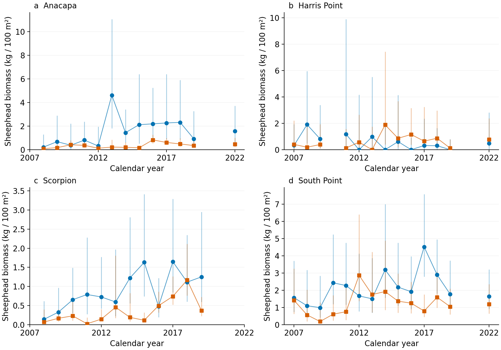
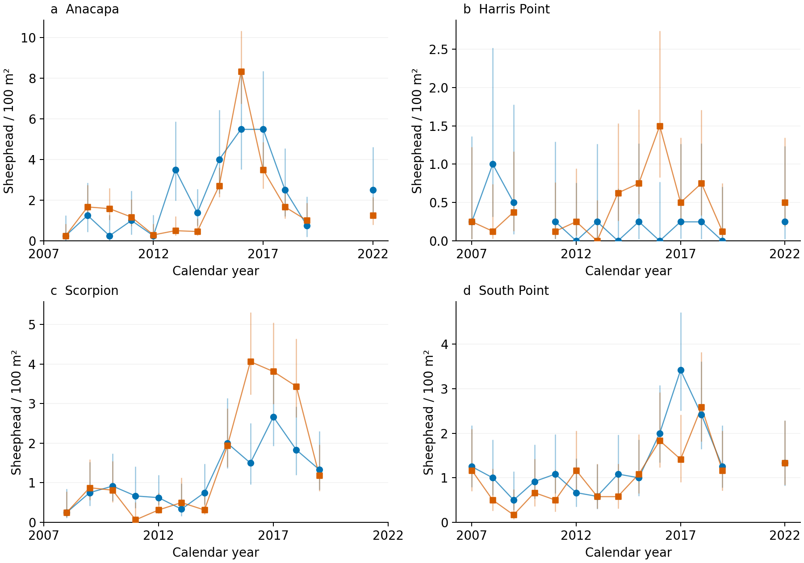

52 fully supported comparison-years. Primary analysis and paper unchanged. All main t intervals include zero; Anacapa is interval-method sensitive. See the full report for assumptions and limits.
Full methods and interpretation
| MPA | response | n_years | slope | lower | upper |
|---|---|---|---|---|---|
| Anacapa Island SMR 2003 | density | 13 | 0.092 | -0.062 | 0.247 |
| Anacapa Island SMR 2003 | biomass_count_only | 13 | 0.107 | 0.036 | 0.178 |
| Anacapa Island SMR 2003 | biomass | 13 | 0.093 | -0.015 | 0.201 |
| Harris Point SMR | density | 13 | -0.039 | -0.102 | 0.024 |
| Harris Point SMR | biomass_count_only | 13 | -0.047 | -0.152 | 0.058 |
| Harris Point SMR | biomass | 13 | -0.034 | -0.153 | 0.086 |
| Scorpion SMR | density | 12 | -0.100 | -0.236 | 0.036 |
| Scorpion SMR | biomass_count_only | 12 | 0.033 | -0.051 | 0.117 |
| Scorpion SMR | biomass | 12 | 0.032 | -0.036 | 0.100 |
| South Point SMR | density | 14 | -0.013 | -0.078 | 0.052 |
| South Point SMR | biomass_count_only | 14 | 0.033 | -0.084 | 0.150 |
| South Point SMR | biomass | 14 | 0.010 | -0.104 | 0.124 |

Blue circles: protected. Orange squares: reference. Conditional count and size intervals; not total uncertainty.
